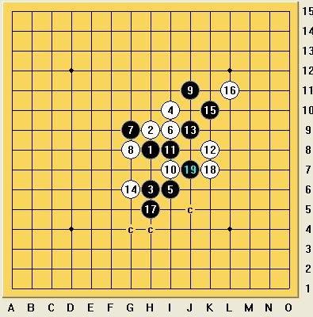

这个瑞星新变化，白的应对是不是有问题，怎么黑胜率会有７５％以上？
#1 这个瑞星新变化，白的应对是不是有问题，怎么黑胜率会有７５％以上？ 作者：聂淼 发表时间：2009-3-8 14:11:52
=======上图对应的爱五子棋谱代码如下，以便你拆解：========
h8h9h6i10i6i9g9g8j11i7i8k8j9g6k10l11f8h10j8j7f7
======================================================
这个变化是这届ＰＢＥＭ最先走出来的，白基本怎么应，粗略看了下，黑胜率７５％以上
白似乎这样下更好吧
=======上图对应的爱五子棋谱代码如下，以便你拆解：========
h8h9h6i10i6i9g9g8j11i7i8k8j9g6k10l11f8f7e6h5i4d9e8g7h7d7i11e7c7j12d8f10
======================================================
#2 Re:这个瑞星新变化，白的应对是不是有问题，怎么黑胜率会有７５％以上？ 作者：龙诺棋怪 发表时间：2009-3-8 20:21:45
不知道你的胜率是什么概念？怎么得出的？我要是每局能粗略看了下,就能知道胜率就好了。哈。#3 Re:这个瑞星新变化，白的应对是不是有问题，怎么黑胜率会有７５％以上？ 作者：行云流水 发表时间：2009-3-8 20:38:49
不知道“这个变化是这届ＰＢＥＭ最先走出来的”，这具体指哪一手？如果是黑17，从目前手头可搜索的资料显示，最早在2006年下半年已有人下了。#4 Re:这个瑞星新变化，白的应对是不是有问题，怎么黑胜率会有７５％以上？ 作者：卖身打胎 发表时间：2009-3-9 1:39:34
看见是有人这么下
#5 Re:这个瑞星新变化，白的应对是不是有问题，怎么黑胜率会有７５％以上？ 作者：wd1988 发表时间：2009-3-9 14:53:30
这个12我是仔细看过，并且有一段时间都拆解过的，前期令我得意的是，奸细等高手都没有给出这个14之后15正确的应对方法，所以我基本都是白胜或和棋。但是自从小刀走出了这个14之后的15后，我就愣住了。这个16手防下是绝对必败的，而之后的17手下在如下位置：
=======上图对应的爱五子棋谱代码如下，以便你拆解：========
h8h9h6i10i6i9g9g8j11i7i8k8j9g6k10l11h5
======================================================
18手谱上的防守和之后的路线如下
=======上图对应的爱五子棋谱代码如下，以便你拆解：========
h8h9h6i10i6i9g9g8j11i7i8k8j9g6k10l11h5k7j7
======================================================
这个19一出，黑就成了大优型，白的防点，经过验证必败的如下图所示：

这样一来，白棋就无路可走了。虽然没有地毯，但是这样的棋型必然是黑大优的。而且早有结论说12是败招，所以我后来就不敢下这个12了
#6 Re:这个瑞星新变化，白的应对是不是有问题，怎么黑胜率会有７５％以上？ 作者：米兰 发表时间：2009-3-9 15:23:23
18手要是死防的话有什么结论呢#7 Re:这个瑞星新变化，白的应对是不是有问题，怎么黑胜率会有７５％以上？ 作者：行云流水 发表时间：2009-3-10 0:32:56
早有结论白12是败招吗？不知道是哪位给出的终结结论？在我看来，这个结论似乎顶多算是一个疑似结论吧。
=======上图对应的爱五子棋谱代码如下，以便你拆解：========
h8h9h6i10i6i9g9g8j11i7i8k8j9g6k10l11h5h7
======================================================
=======上图对应的爱五子棋谱代码如下，以便你拆解：========
h8h9h6i10i6i9g9g8j11i7i8k8j9g6k10l11h5h4
对这个变化白18随便给这2个防点，也没看见黑怎么胜。
======================================================
#8 Re:这个瑞星新变化，白的应对是不是有问题，怎么黑胜率会有７５％以上？ 作者：wd1988 发表时间：2009-3-10 21:02:52
所有的结论都是流传的，因为毕竟现在对于大部分人来说（不属于圈子里的），很多开局哪怕是已经存在地毯谱的都不知道。因为很多谱根本没放出来。我在棋室就不断听说斜一已经地毯，但是出于各种目的，谁也没有说站出来展示一下如何地毯，哪怕是对战摆棋都没有过。但传言就这么流传出来了。就这个12来说，我和很多人都没有所谓的必败谱，只不过是听说了一个结论，不知道对错。我常下这个12，可能是有几个弱防导致速败了，也没有深入研究。如果指点，不胜感激#9 Re:这个瑞星新变化，白的应对是不是有问题，怎么黑胜率会有７５％以上？ 作者：刀魂 发表时间：2009-3-10 21:19:50
个人觉得 黑棋胜利大，因为白的外围不好控制。。。对以后的防守相当的被动#10 Re:这个瑞星新变化，白的应对是不是有问题，怎么黑胜率会有７５％以上？ 作者：賢周 发表时间：2009-3-10 21:20:53
=======上图对应的爱五子棋谱代码如下，以便你拆解：========
h8h9h6i10i6i9g9g8j11i7i8k8j9g6k10l11f8h10j8j10
======================================================
=======上图对应的爱五子棋谱代码如下，以便你拆解：========
h8h9h6i10i6i9g9g8j11i7i8k8j9g6k10l11h5h4
======================================================
#11 Re:这个瑞星新变化，白的应对是不是有问题，怎么黑胜率会有７５％以上？ 作者：刀魂 发表时间：2009-3-15 3:57:57
顶一个。。。。。